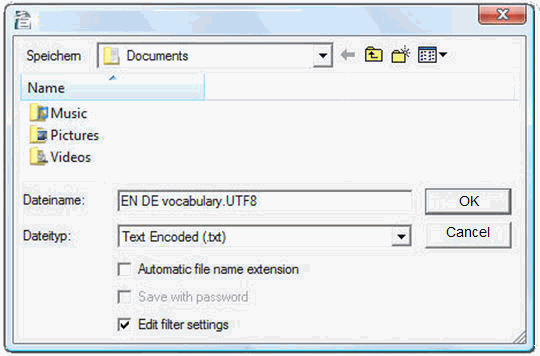
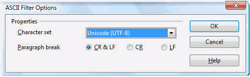

Szójegyzékek
A szójegyzékek kézi úton, az OmegaT-vel való használatra létrehozott és frissített állományok.
Ha egy OmegaT-projekt egy vagy több szójegyzékkel rendelkezik és a program az adott szövegrészben előforduló kifejezéssel egyező kifejezést talál a szójegyzék(ek)ben, ezeket a Szójegyzék ablakban jeleníti meg.
Használat
Ha egy meglévő szójegyzéket kíván használni, a projekt létrehozása után tegye azt a /glossary könyvtárba. Az OmegaT automatikusan felismeri az ebben a könyvtárban lévő szójegyzékeket, amikor egy projektet megnyit. Azok az adott szövegrészben lévő kifejezések, amelyeket az OmegaT megtalál a szójegyzék(ek)ben, a Szójegyzék ablakban jelennek meg.

Az = jel előtt áll a forrásnyelvi kifejezés, annak fordítása(i) pedig utána. A szótári elemhez megjegyzés fűzhető. A szójegyzékek funkciója csak pontos megfeleléseket talál (vagyis a ragozott alakokat stb. nem). Új kifejezéseket közvetlenül felvehet a szójegyzék(ek)be a fordítás során (például egy szövegszerkesztővel), de az újonnan felvitt kifejezéseket a rendszer csak akkor ismeri fel, ha a projektet újból betölti.
Állományforma
A szójegyzékek egyszerű szöveges állományok, háromoszlopos, tabulátorral elválasztott bejegyzésekkel, melyek közül az első oszlopba kerülnek a forrásnyelvi, a másodikba a célnyelvi kifejezések. A harmadik oszlop kiegészítő információt tartalmazhat. A szójegyzékek készülhetnek a rendszer alapbeállítás szerinti kódolásával (ilyenkor a kiterjesztésük .tab), illetve UTF-8 kódolással (ekkor a kiterjesztés .utf8). Nyilvánvaló okokból ajánlott az unikódos (UTF8) kódolás használata.
Szójegyzékek létrehozása
Megfelelő körültekintés esetén a módszer használata egyértelmű. Ehhez az OpenOffice Writer alkalmazásra van szüksége, ezért - ha még nem tette meg - töltse le és telepítse az OpenOffice.org programcsomagot. Indítsa el az OpenOffice.org programot és nyisson meg egy új szöveges dokumentumot, vagy indítsa el az OpenOffice Writer alkalmazást.
Az üres dokumentumba az alábbiak szerint írja be a kifejezéseket: forrásnyelvi kifejezés, tabulátor, célnyelvi kifejezés, tabulátor, megjegyzés vagy magyarázat a szócikkhez, majd Enter. A tabulátor a billentyűzet bal oldalán található. Ha nem kíván hozzáadni megjegyzést, a második tabulátort elhagyhatja. A kifejezés lehet egyetlen szó vagy egy teljes szószerkezet. A következő sorban ugyanígy adja meg a második kifejezést és annak fordítását.
Ha befejezte a kifejezések hozzáadását, két oszlopba, bal oldalon a forrásnyelvibe, jobb oldalon a célnyelvibe kerülnek a kifejezések, és megjelenhet egy harmadik oszlop is, amely a megjegyzéseit és magyarázatait tartalmazza. A tabulátor (→ az alábbi példában) és az Enter (¶ ) karaktert az ¶ ikonra kattintva jelenítheti meg az alkalmazásban. Íme néhány sor egy angol-német szójegyzékből:
word →Wort→das (-/e/s, Wörter/-e)¶
small house→Häuschen→das,
(pl Häuschen)¶
dog →Hund→m, f Hündin ¶
horse→Pferd→n, m Hengst f Stute n Fohlen¶
Az oszlopok létrehozásához NE használja az OpenOffice.org oszlopkészítő funkcióját: a kifejezések elválasztására csakis a tabulátort alkalmazza.
Ha befejezte a kifejezések hozzáadását, válassza a Fájl > Mentés másként menüpontot. A "Mentés helye" négyzetbe írja be a szójegyzékfájl nevét és az ".utf8" kiterjesztést (pl. "MyGlossary.utf8"). A "Szűrő" esetén válassza ki a "Text Encoded (.txt.)" opciót. Szüntesse meg az "Automatikus fájlnévkiterjesztés" bejelölését és kapcsolja be a "Szűrőbeállítások szerkesztése" pontot:

A Rendben gombra kattintva fogadja el a beállításokat. Ekkor megjelenik egy párbeszédablak két lehetőséggel: "Eredeti forma megőrzése" és "Mentés ODF-formában". A szöveg kódolt formájú mentéséhez válassza az "Eredeti forma megőrzése" gombot. Az ASCII szűrési lehetőségek párbeszédablakban (lásd alább) válassza ki az "Unikód (UTF-8)" karakterkészletet:

A Rendben gombra kattintva fogadja el a beállításokat.
Ha létrehozott egy OmegaT-projektet, másolja vagy helyezze át ezt az állományt a projekt \glossary könytárába. Ha a projekt már nyitva van, a szójegyzék átmásolása után töltse be a projektet újra. A szójegyzéket módosíthatja a projekten végzett munka közben. A szójegyzék változásait a rendszer körülbelül másodpercenként ellenőrzi a háttérben, ezért az új szójegyzék elmentése után nem szükséges a projektet újból betölteni.
Amikor megnyit egy olyan szövegrészt, amelyikben bejegyzett forrásnyelvi kifejezés fordul elő, a Szójegyzék panelen megjelenik a hozzá tartozó, a szójegyzékben előforduló bejegyzés (vagy szójegyzékekben, ha azok a glossary almappáiban is tárolhatók).
A Trados Multiterm használata
Például a Trados Multiterm szövegexportálási funkciójával mentett szójegyzékek módosítás nélkül használhatók, ha a .tab kiterjesztéssel látja el őket, és ha a forrásnyelvi és a célnyelvi mező rendre az első két mező. Ha az exportálást a "Tabulátorral határolt exportálás" opcióval hajtja végre, az első 5 oszlopot (sorszám , létrehozás dátuma stb.) ki kell törölnie a két releváns elem előtt.
Szójegyzékekkel kapcsolatos gyakori problémák
- Probléma: Nem jelennek meg a kifejezések.
- Lehetséges okok:
- nincs szójegyzékfájl a "glossary" mappában
- a szójegyzékfájl üres
- az egyes elemeket nem tabulátorral választották el egymástól
- a szójegyzékfájl kiterjesztése nem megfelelő (.tab vagy .utf8)
- a szójegyzékben szereplő kifejezés és a forrásszövegben lévő kifejezés nem PONTOSAN egyezik - például többes számban van
- a szójegyzékfájl kódolása nem megfelelő
- nincs olyan elem az aktív szövegrészben, amely egyezik a szójegyzékben szereplő kifejezéssel
- a fenti problémákat elhárította, de a projektet nem töltötte be újra.
- Probléma: A Szójegyzék panelen egyes karakterek hibásan jelennek meg (a szerkesztő panelen viszont jól láthatók).
- Lehetséges okok:
- a kiterjesztés és az állomány kódolása nem egyezik.